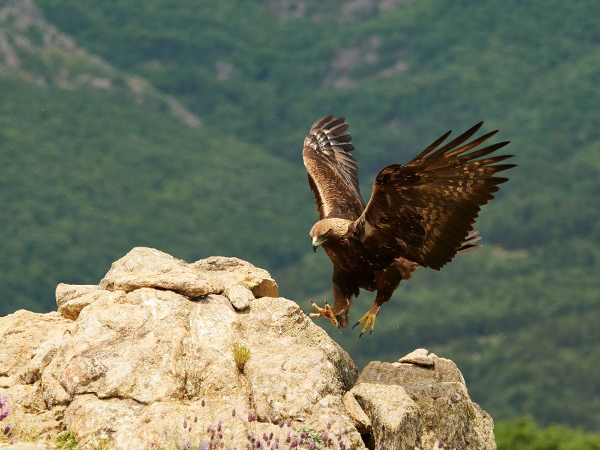
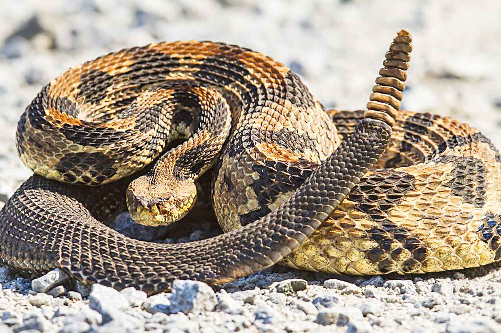

El entorno natural que rodea a la cascada de los
huenchos es muy bello ya que esta lleno de sonas
verdes en los cuales e encuntran algunos arboles
y plantas como:
el mezquite, el encino, palo bobo, pirul, pastos,
zacarte, entre otros .
en cuanto a la fauna, se encuntran diferentes tipos de especies animal,tal com: los venados, jabalies, sepientes, tarantulas, vacas, aves, aguilas, alcones, peces, sapos, ranas, lagartijas, entre otros.  